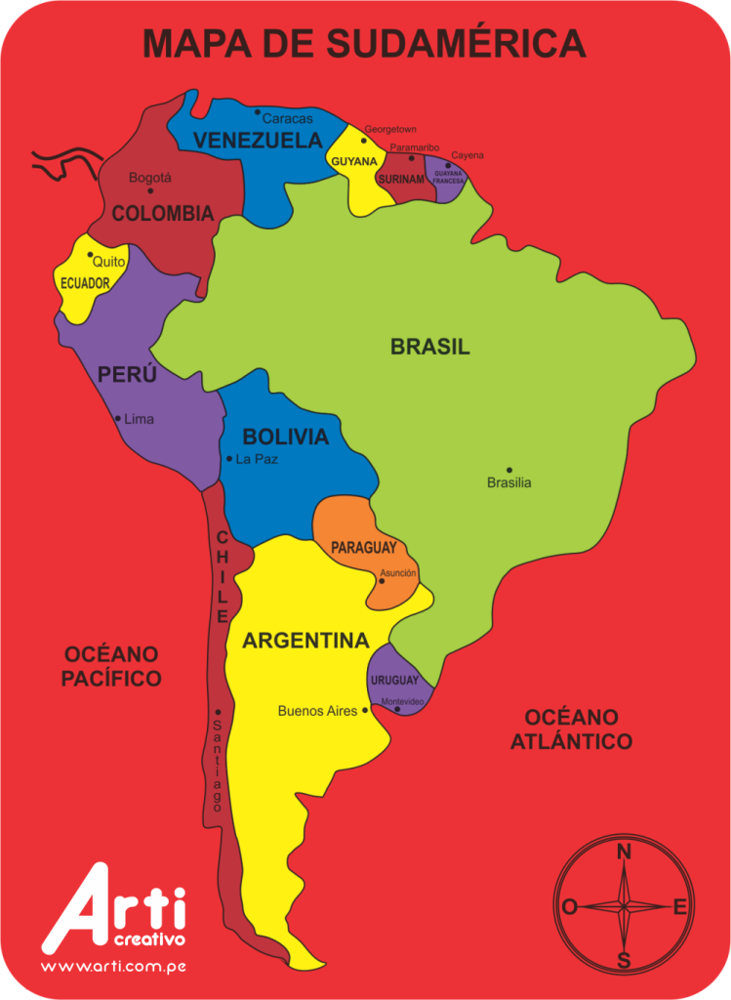

CLASIFICACIÓN DE CONMEBOL PARA LA COPA MUNDIAL DE F{UTBOL DE 2026
La clasificación de Conmebol para la Copa Mundial de Fútbol de 2026 es el torneo que determinará las selecciones nacionales que asistirán por parte de la Confederación Sudamericana de Fútbol al mencionado torneo que se celebrará en América del Norte: Canadá, Estados Unidos y México. Tras los cambios realizados por la FIFA respecto a la cantidad de equipos clasificados, la Conmebol incrementó su número de cupos contando ahora con 6 plazas directas y un cupo otorgado para el Torneo de Repechaje.1
ARGENTINA - BRASIL - PERÚ - COLOMBIA - VENEZUELA - PARAGUAY - URUGUAY - ECUADOR - BOLIVIA - CHILE
